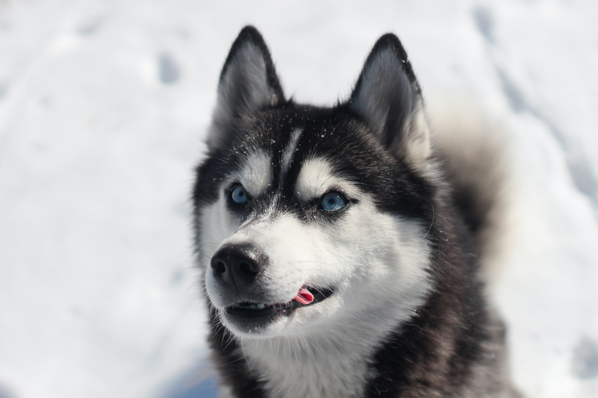
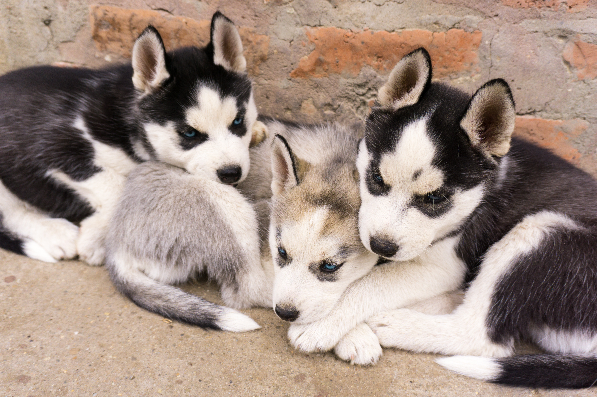

Information about Huskies

A Siberian Husky's fur was custom-made for winter, and they are more than happy to drag you outside to walk in a winter wonderland when it is cold.

The AKC lists Siberian huskies as moderately eager to please and adaptable. This rating means that they take well to training. It may take them a couple of tries, but they will get there eventually if you’re patient and persistent.

Siberian huskies are one of the better breeds for households with young children, though, making them ideal pets for all types of families.

Siberian huskies made headlines in 1925 when a sled team of them raced 340 miles in six days to bring serum to Nome, Alaska, where people were suffering from diphtheria